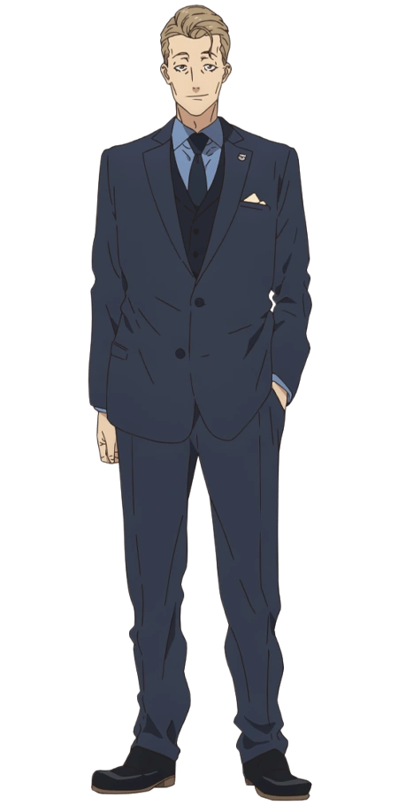
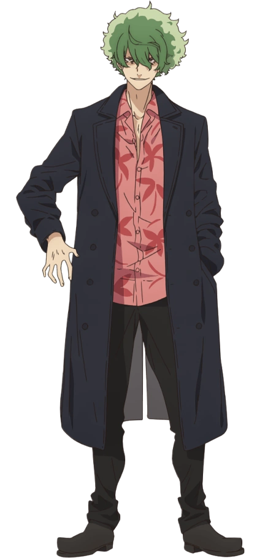
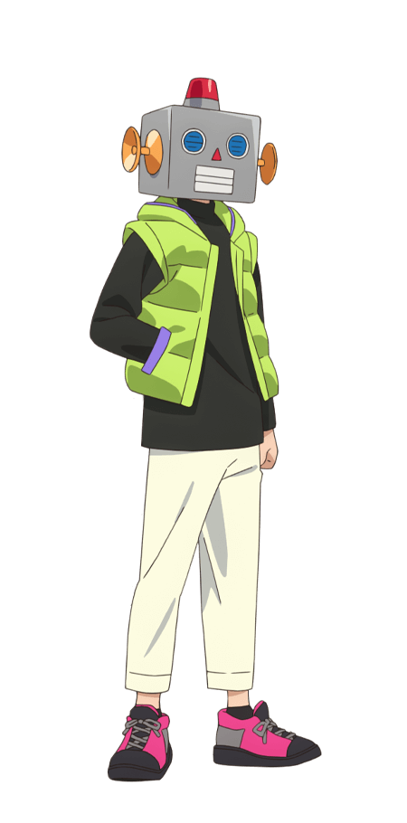

Yoshimatsu Shinji (吉松 シンジ)

Shinji was a middle-aged man with dark blonde hair and brown eyes. He is most commonly seen wearing a 3-piece, navy blue suit with an Alan Institute badge attached to his left lapel.
A member of the Alan Institute and Mika's old friend. When not abroad on business, he was a regular at café LycoReco, taking a particular interest in Chisato.
Majima (真島)

Majima is a young male with voluminous green hair. He wears a dark navy blue trench coat, a patterned pink shirt with red palm trees, black pants and a pair of dark grey boots.
The ringleader of the terrorist group who attacked Kita-Oshiage subway station. He states his objective is to balance out the "lie", presumably referring to the peace upheld by the DA.
Robota (ロボ太)

Robota wears a large helmet, reminiscent of a toy robot to conceal their identity. The helmet is grey, with big blue eyes, a red triangular nose and a light grey rectangular mouth. On each side, the helmet has an orange radar-like object, likely meant to resemble ears. The top of the helmet is decorated with a red, conical lamp, similar to an alarm siren. Robota does not conceal the rest of their body to such an extreme degree, revealing their pale skin. They're commonly seen wearing a long-sleeved, black top, a lime green and purple puffer vest, cropped beige trousers and fluorescent pink and black sneakers.
The self-proclaimed "world's best hacker". Robota is a self-serving freelancer that's willing to expose others for their own benefit, even if it results in the victim's injury or death. With little to no ethical boundaries, they're willing to undertake contracts involving murder, acts of terrorism and other criminal activities. Despite their technical expertise, their pride, lack of integrity and blind obedience to their employers make them an easy target for exploitation.